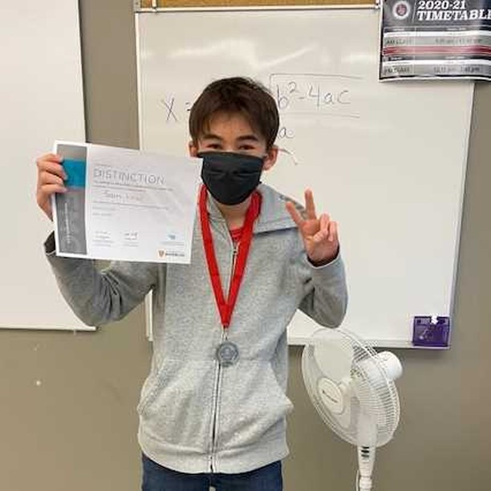

|
This is my face! Get used to it as it will be littered around this site like
those naff multicoloured sprinkles on dollar store cupcakes.
|
|
This is me at a computer. You can't see the computer but I promise that it is indeed there.
I am into computer science (I wrote the code for this website...
I dunno if thats a thing I should be hiding though) and also play video games
and also am a wikipedia editor and also was born after the year 1960 so I use a computer quite a lot!
|
|
|  |
I also like math and I think I am good at it. Being "good" at something is relative though.
I'm "good" as in better than someone who is bad but not as good as like Euclid or something.
Anyway, I've been competing in math competitions since grade seven and I really enjoy it.
The image to the left is me with a Distinction Certificate for the Fermat Math Competition and the School Champion Medal.
School champion is the kinda good at math I am I guess. Not like Country champion sadly ;(.
|